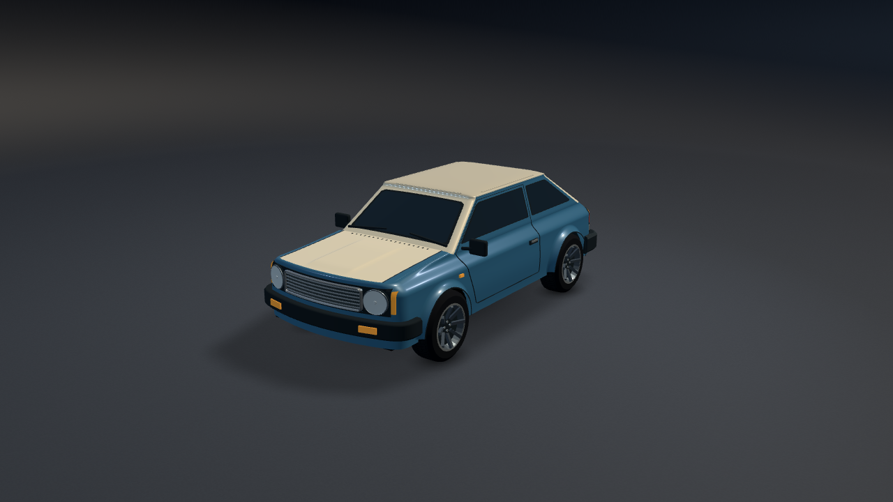

Current production models, matched camera poses and studio setup. Visual review only. Both renderers pass 34 technical checks. The electric model still needs finishing work to meet the Compact comparison.
The nose/fender and hood/front transitions form abrupt, slab-like lighting breaks in matched native views. Separate side, hood and front skin patches meet without a shared rolled corner profile. The Compact has more developed edge transitions.
The rear-door bottom outline starts at Z=0.405, while the existing vertical seam is at Z=0.26. The rear door has no corresponding leading closure because that branch runs only for the front door. This leaves an obvious break in the panel outline. Seams are raised 5mm bars over intact paint.
RoundedTail remains an uninterrupted painted skin. PlateWell is placed 0.005 model units outward, RearOpticalHousing 0.006 outward; fascia adds relief to rear_z. These are surface overlays rather than formed pockets, which leaves the rear looking flat beside the Compact.
Full 154,276 / simpler 55,700 triangles. No phone performance or appearance acceptance is inferred from these desktop captures. The existing top diagnostic pose clips the longer car and is excluded from this comparison; no production camera was changed.

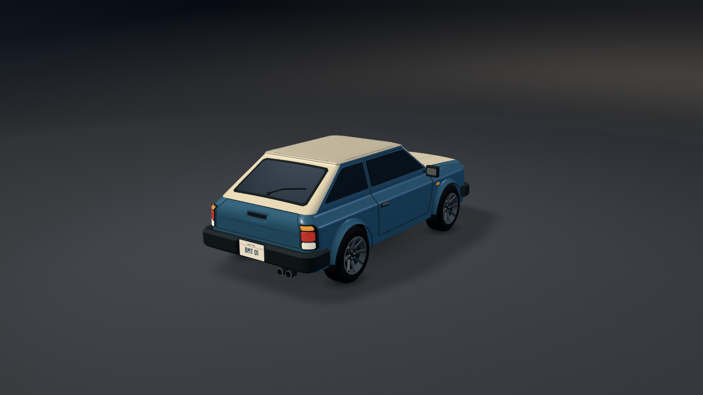
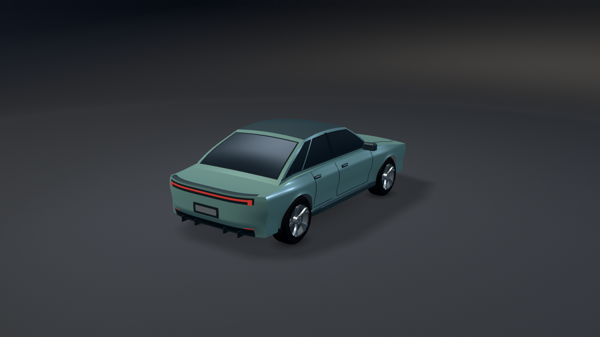


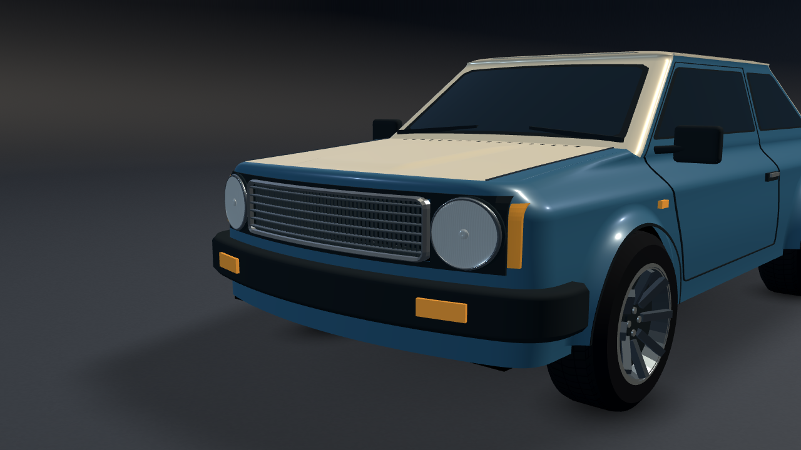

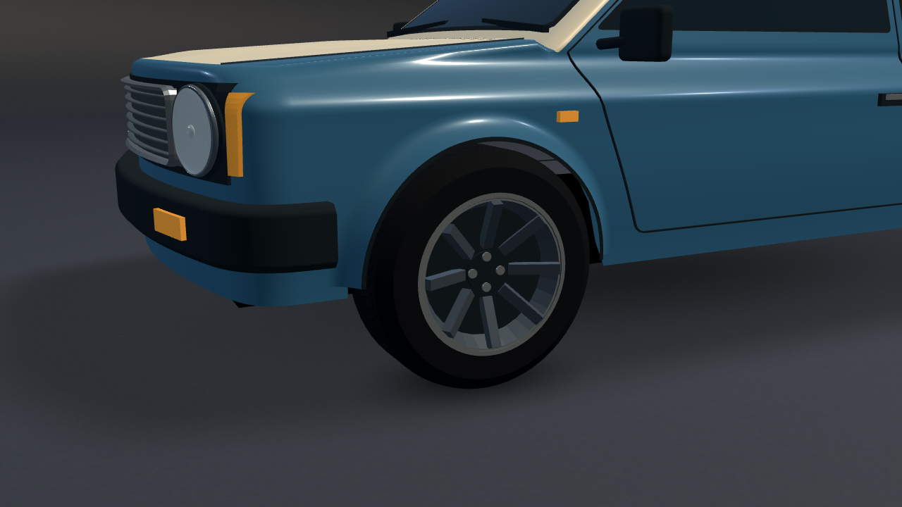

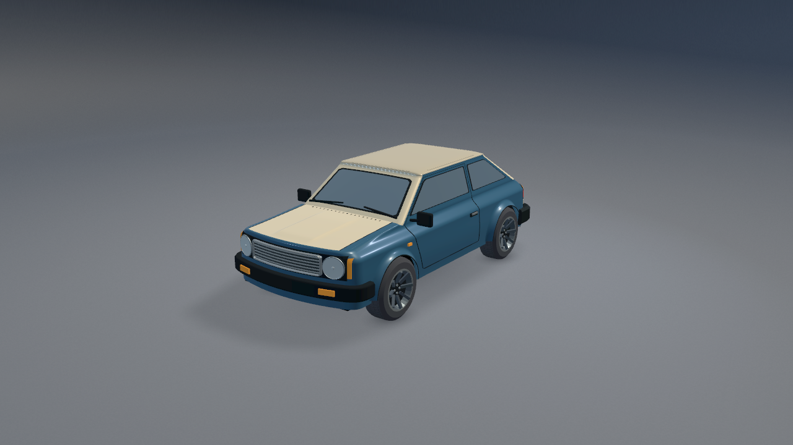

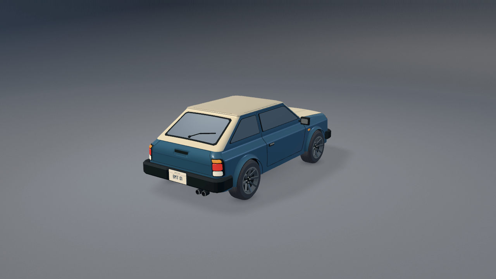

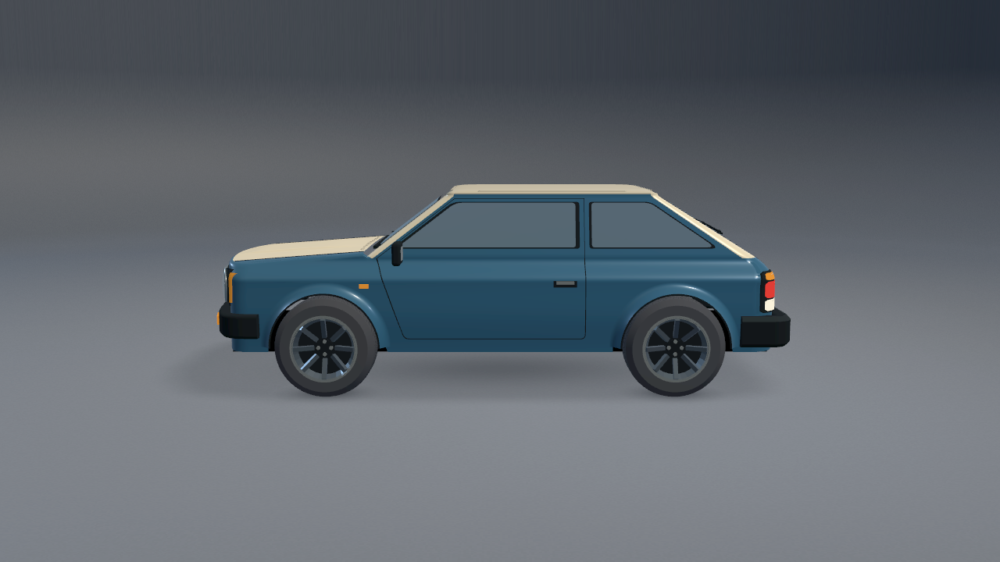
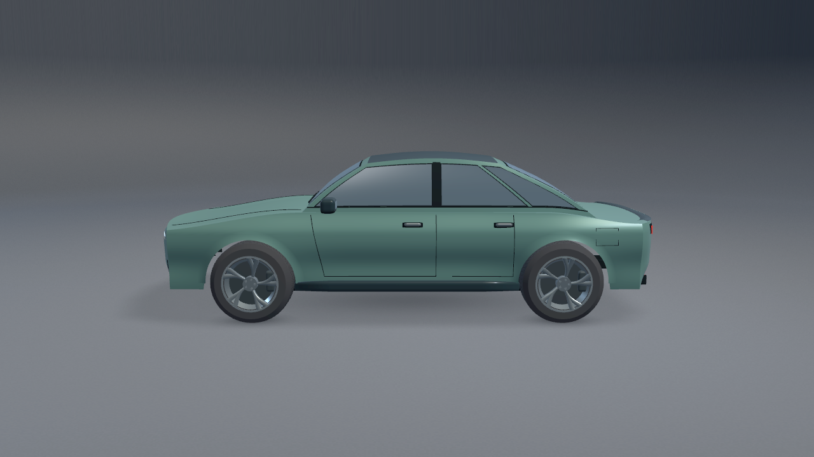


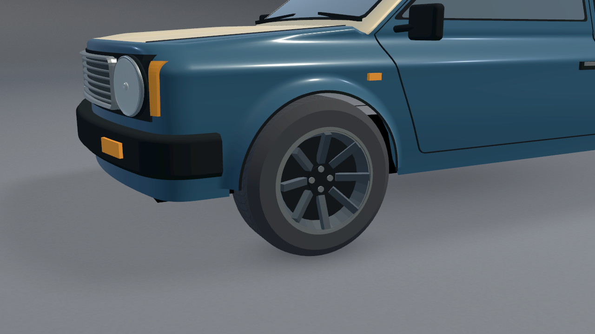
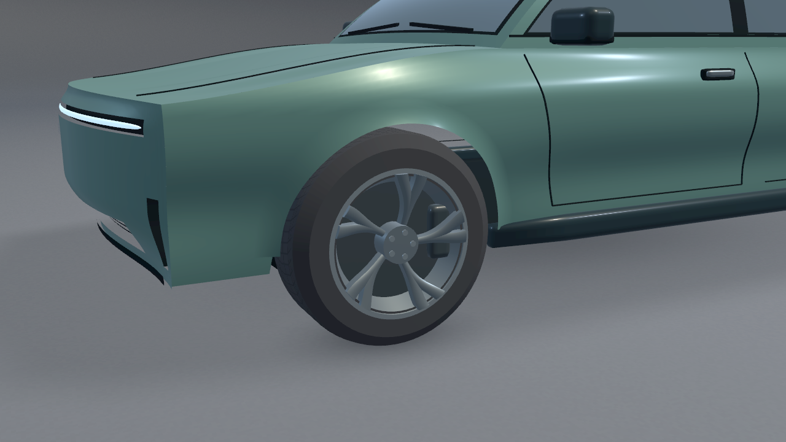